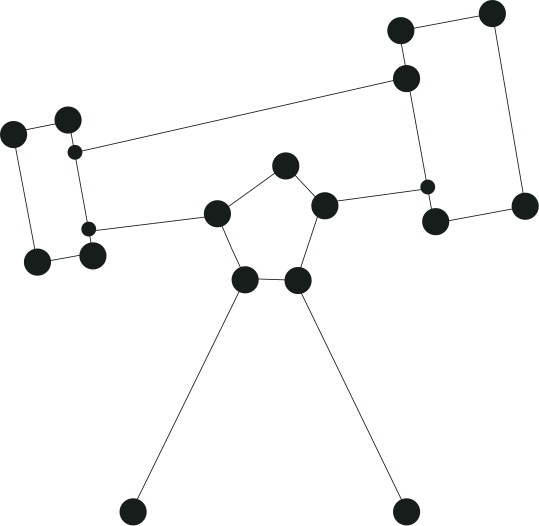

J&TG’s unique working process is set up to bring innovative products to life. It guarantees informed, smart decision making and compliments the exclusive products made by our diverse range of clients within the electronic consumer goods sector.
01 Observe & Explore
Each J+TG engagement begins with a challenge, set out by the client in the form of an agreed brief. In this phase, the team sets out to define the challenge from a comprehensive list of research, strategy and discoveries typically gathered from the workshop phase.
Throughout the observation stage, the team will brainstorm and evaluate various possibilities and scenarios to realise an optimised, working roadmap.


02 Chart & Construct
It’s at this point that we engage with our pool of specialist partners to bring each idea to life. And from each idea, prototypes start to materialise — straw working models which give us an immediate opportunity to see how various ideas or executions may play out around all the content and information gathered so far.
The types of prototypes can be anything from simple sketching to user flows and wireframes to interactive prototypes.

03 Design & Build
To fully bring the prototypes to life, the team steps into the creation phase. A combination of the design and technical. The J&TG team brings all the insight gathered to date, as well as their extensive experience to inform how the design and build will shape up, across every touchpoint.
Each team member collaborates seamlessly with the craft and agility required throughout mini iterations, along with our Partners to keep the project on-course. That typically means employing Experience Design principles and skillsets across UI Design, UX Copy, Content Design, and Development.

04 Test & Iterate
Now it’s time to put all that great work into practice. To stress test, and run rigorous evaluation over all the ideas.
This phase is essential as it helps us determine what works, and can work in the real world for the people who will be interacting with the experience on a day-to-day basis.
And so the stress test begins. This stage analyses metrics to validate performance, and to observe real human behavior.
The output of this phase further informs what we know so far. It highlights where certain issues may lie, and usually provides a great indication of what’s working well.
The results of the test phase give us essential feedback, and provide us all (client and the J&TG team) with the opportunity to refine and redevelop identified areas.
Once all areas have been strengthened, refined and addressed, it’s onto the next exciting stage - assessing when the product will go-to market.
